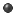

The WindowTester Pro recording control is used to start and stop/pause the recording as well as add assertion hooks. The recording controls can be found in the recorder view's toolbar items. The Recorder view is opened when you start a new recording session. It will remain opened unless you explicitly close it. The controls are enabled when a recording session is launched.

| Recorder Control Actions | |||
| | Record (Start recording) |  | Record button pressed or a recording session has not been started. |
|
| Pause | Pause button pressed or a recording session has not been started. | |
|
| Add assertion hook | Add assertion hook pressed | |
Related topics: